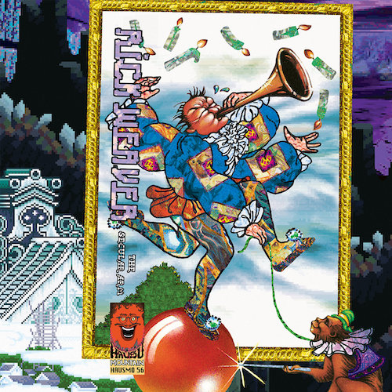

2017
<a href="http://hausumountain.bandcamp.com/album/at-a-festival">At A Festival by Form A Log</a>
INTERVIEW WITH LEMON WEDGE RADIO

<a href="http://hausumountain.bandcamp.com/album/the-secular-arm">The Secular Arm by Rick Weaver</a>
![H&S Ranch Radio with Nicki and Rick - Do you like riddles? Have you ever wondered how many rooms to include in your brand new hotel? Or what do with those Thanksgiving leftovers you STILL haven't finished? Or if a brain can grow hair? Or if Nicki and Rick can actually whistle? And just what is diminished reality? Want to know more about the Texas Red Ash? Or what Burnet peppers taste like? How about what sort of things musician Zack Kouns demands in his Tour Rider? And what is a field recording? Where is this field?e. Soundcloud podcast Texas December 2017](assets/img/ranchradio2.png)